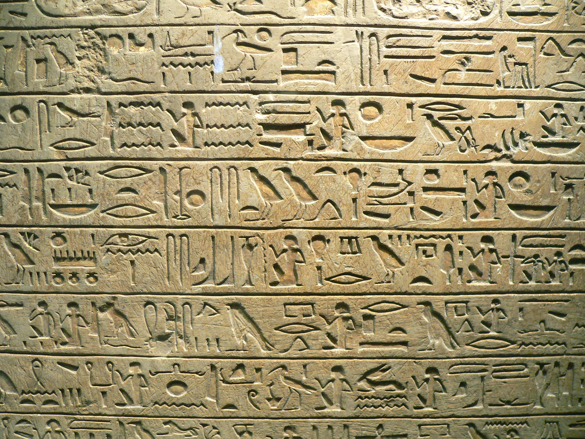
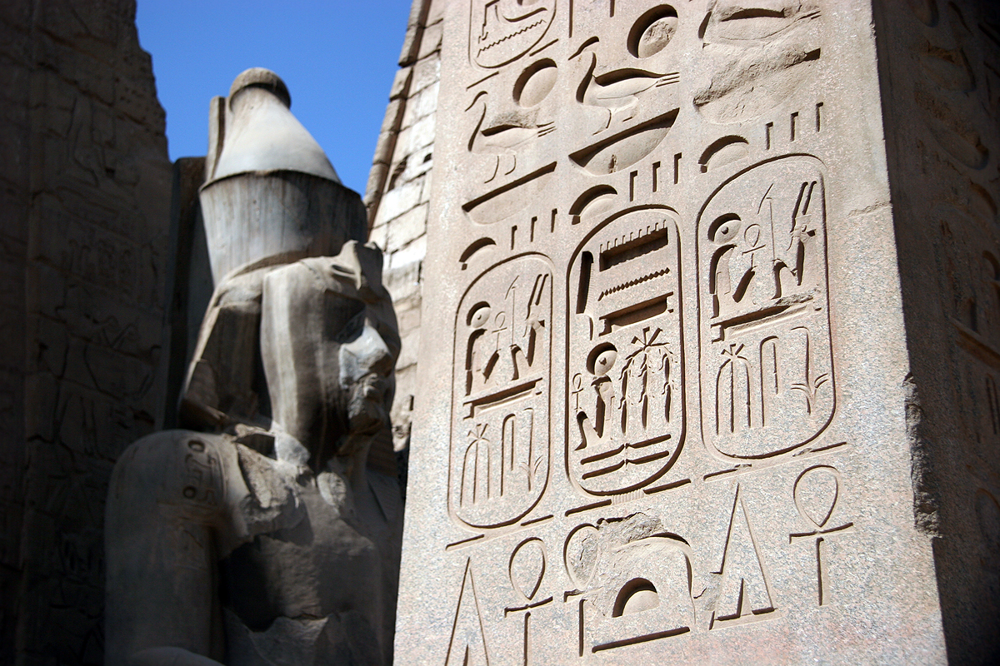
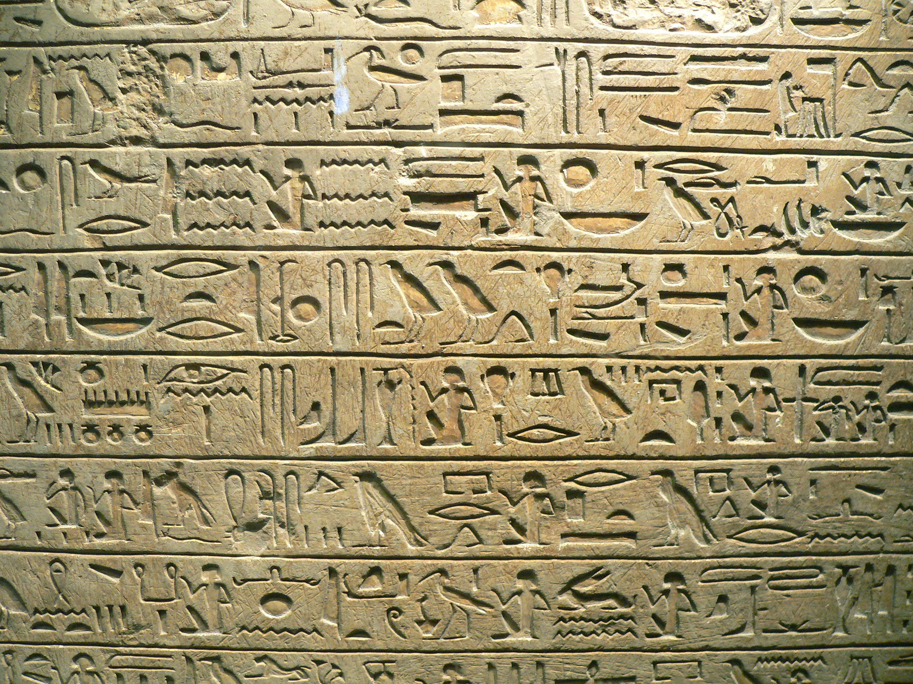
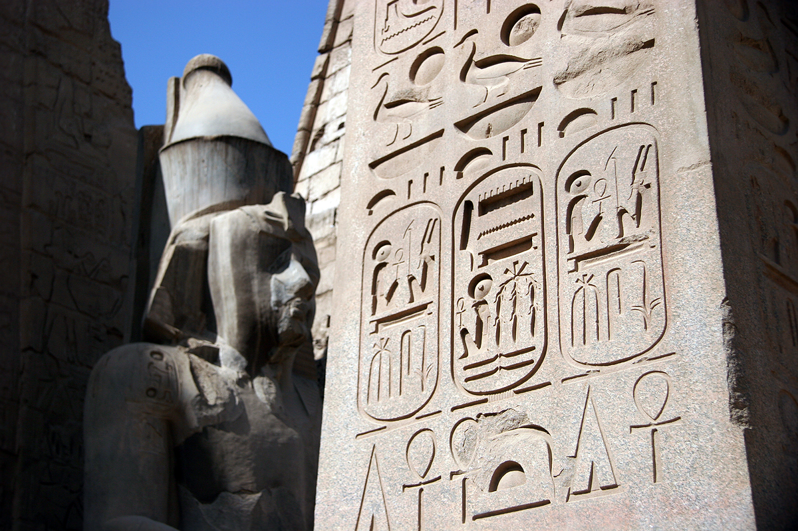
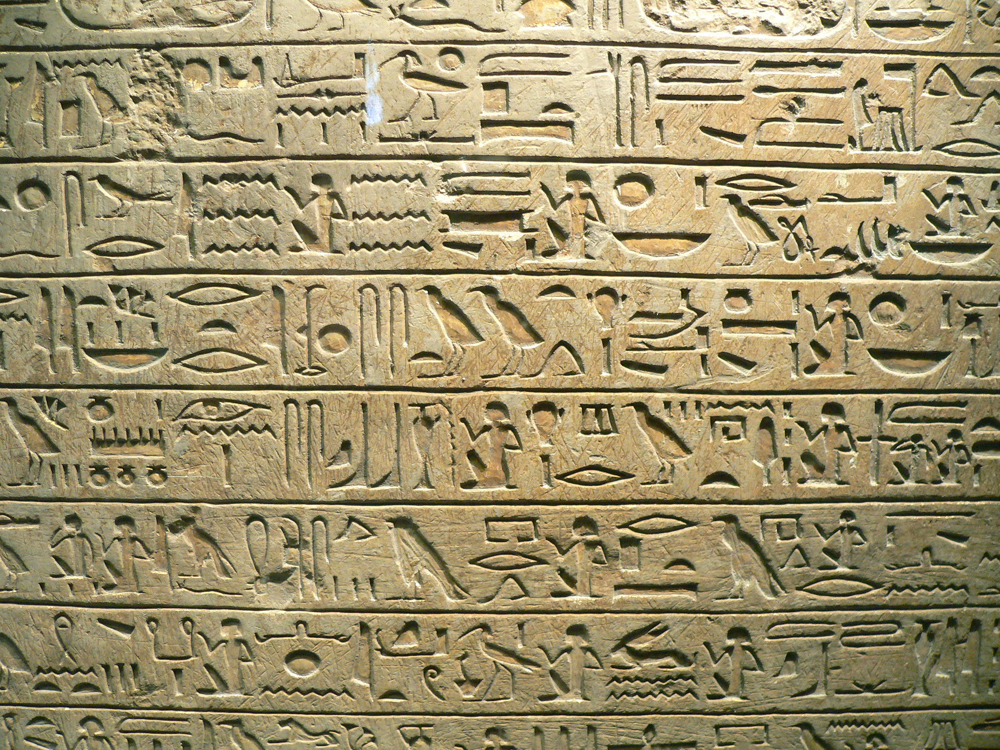
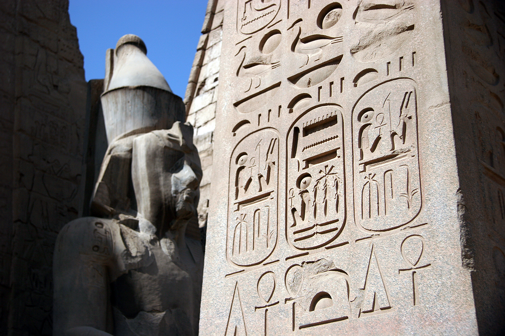

Ancient Egyptian Hieroglyphs
Home
A wall fragment from Seti I's tomb

The Stele of Minnakht

Inscription from Luxor Temple
Quick overview
Place of origin: Egypt
Year of origin: around 3250 BC
[1]
Type of script:
abjad
,
logography
Citations
Images (left to right)
https://upload.wikimedia.org/wikipedia/commons/c/c9/Hieroglyphs_from_the_tomb_of_Seti_I.jpg
https://upload.wikimedia.org/wikipedia/commons/3/34/Minnakht_01.JPG
https://upload.wikimedia.org/wikipedia/commons/4/49/LuxorTemple03.jpg
Information
https://www.britishmuseum.org/exhibitions/hieroglyphs-unlocking-ancient-egypt/egyptian-hieroglyphs-decipherment-timeline
 A wall fragment from Seti I's tomb

The Stele of Minnakht

Inscription from Luxor Temple
A wall fragment from Seti I's tomb

The Stele of Minnakht

Inscription from Luxor Temple